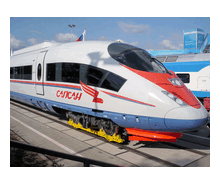

За рулём сижу довольный —
Ездить просто и легко!
Только руль чуть-чуть огромный
И педали далеко
формат png вес - 76 кб
формат jpg вес - 57 кб
формат gif вес - 21 кб

Мне купили паровозик,
Сразу два вагона возит.
Я включу его, и он
За собой везет вагон.
Вот бы мне в нём прокатиться.
Только жаль — не поместиться.
Нарисую я в альбоме
Голубое море,
Белый парус над волною
Бьётся на просторе.